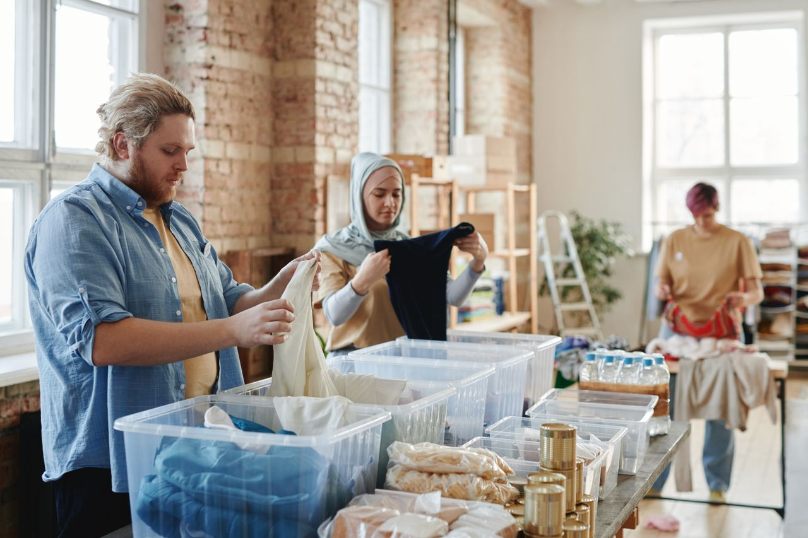
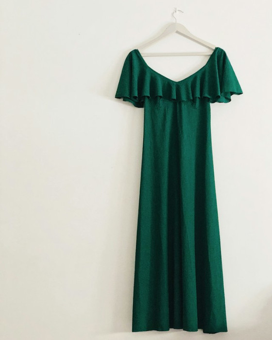
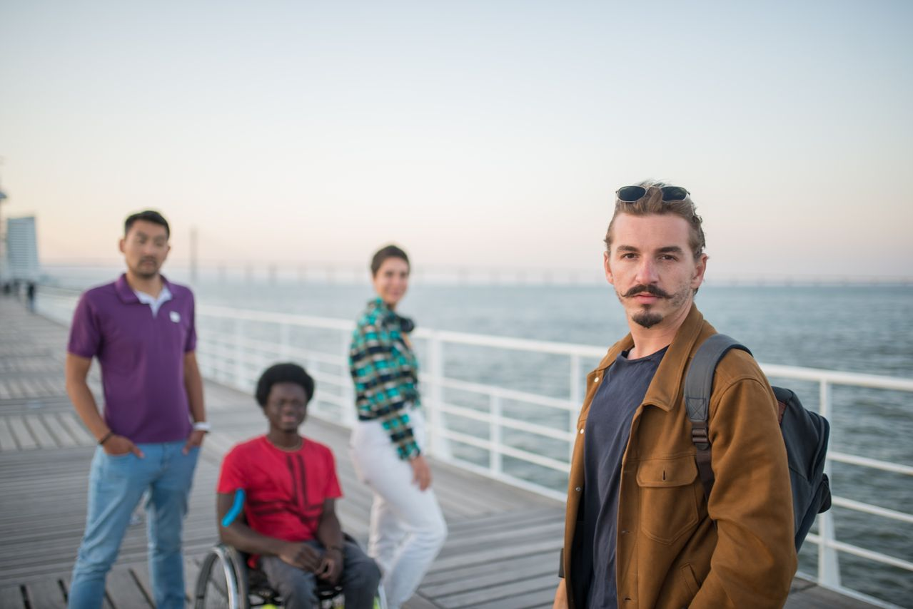
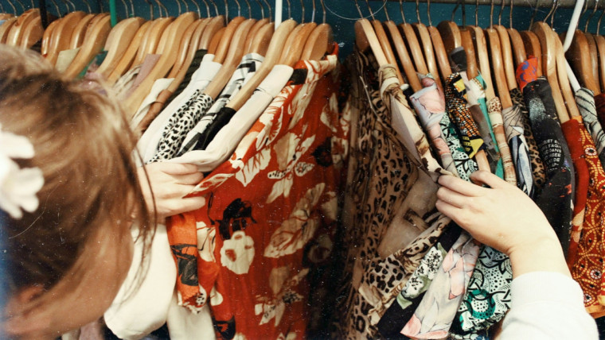
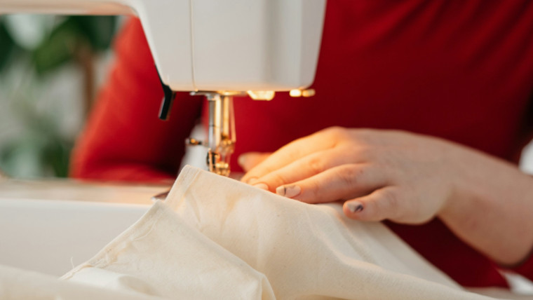

Camiseta branca básica
Peça versátil de algodão, em ótimo estado de conservação. Combina com qualquer visual e está pronta para ganhar uma nova história.
Doe, Troque, Reutilize! Moda circular, acessível e inclusiva
MODA CIRCULAR | ODS 12
Doe, troque e reutilize roupas em bom estado e dê nova vida às peças.

Aquela camiseta esquecida no fundo do armário pode ser a peça que alguém está precisando. Todos os dias, toneladas de roupas em bom estado vão parar no lixo, enquanto muitas pessoas passam frio e não têm o que vestir. Reutilizar e doar é uma solução simples para os dois problemas.
ODS 12 | Meta 12.5Produzir uma única peça consome muita água, energia e recursos naturais. Quando uma roupa ganha uma segunda dona ou um segundo dono, ela continua útil por mais tempo e o investimento ambiental feito na sua produção não é desperdiçado.
Roupas descartadas se acumulam em aterros e levam muito tempo para se decompor. Ao doar, você diminui o lixo, reduz a demanda por novas produções e ajuda a aliviar o impacto da moda sobre o meio ambiente.
Um gesto que leva poucos minutos pode trazer conforto, dignidade e esperança a quem recebe. Separe o que você não usa mais, escolha uma instituição, ONG ou campanha da sua região e faça a entrega: pequenas atitudes, somadas, mudam realidades.
Peça versátil de algodão, em ótimo estado de conservação. Combina com qualquer visual e está pronta para ganhar uma nova história.

Clássica e resistente, a jaqueta jeans é ideal para os dias mais frescos. Ainda tem muita vida útil pela frente.

Leve e confortável, perfeito para o dia a dia ou para ocasiões especiais. Uma ótima escolha para quem busca estilo sem gastar.

Confortável e durável, serve para o trabalho, a escola ou o lazer. Escolher uma peça já usada é uma forma simples de consumir com consciência.

Vestir-se deve ser simples para todo mundo. Fechos de fácil manuseio, como velcro, zíperes com argola e botões maiores, junto com tecidos macios e modelagens confortáveis, ajudam pessoas idosas, com deficiência ou com mobilidade reduzida a se vestirem com autonomia. Por isso, cada peça que circula por aqui precisa ser prática, confortável e acolhedora para quem vai usá-la.

Antes de comprar, vale perguntar: eu preciso mesmo disso? Escolher peças duráveis, garimpar em brechós e trocar roupas com amigos reduz o desperdício e ainda ajuda no bolso. Pequenas escolhas do dia a dia fazem a moda pesar menos no planeta.
Ler mais →
Um furo ou uma mancha não precisam ser o fim da peça. Com agulha, linha e criatividade, dá para remendar, aplicar um patch ou transformar uma roupa antiga em algo único. Cuidar do que já temos prolonga a vida útil das roupas e deixa o guarda-roupa com a sua cara.
Ler mais →A roupa conta histórias. No Brasil, tecidos coloridos como a chita e trajes típicos, como a baiana e as vestes das festas populares, carregam tradições e identidades. Valorizar a moda da nossa cultura é preservar a memória e reconhecer quem a produz.
Ler mais →